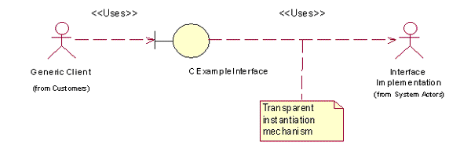

Plug-In Framework Overview
The Plug-in (ECom) framework is a generic framework that provides a single mechanism to register and discover plug-ins and load an appropriate plug-in.
Purpose
In early versions of Symbian platform, plug-ins were provided by polymorphic interface DLLs. All the frameworks within the Symbian platform that needed to use plug-ins had to provide their own mechanisms for the clients to discover and instantiate the implementations. This resulted in duplication of functionality.
The Plug-In framework is intended to provide a common and system-wide mechanism for instantiating a dynamically determined component.
Three distinct users of the plug-in framework are:
Framework or Application designers
These users need to understand interface definition design and platform security implications.
Plug-in writers
These users need to understand interface implementation, DLL creation and platform security implementation issue.
Plug-in users
These users need to understand that the plug-in framework helps in selecting the plug-in but sometimes may need to specify which implementation the framework should choose.
Required background
Run-time Binding: This is called dynamic binding or late binding. The linking of a routine or object is performed during runtime based on the requirements.
DLL (Dynamic Link Library): Is a piece of code (a library) that is linked to a program at runtime rather than during the build process. The code inside a DLL can be shared by several clients at the same time without being duplicated in the mobile memory.
In addition , the user should be aware of the Platform Security Considerations of the plug-in framework architecture.
Key concepts and terms
- Plug-in
In computing, a plug-in(extension) consists of a computer program that interacts with a host application(a web browser or an email client) to provide a very specific function on demand.
Applications support plugins to:
- Plug-in System
A client wishes to access a plug-in. The plug-in details are known only at run-time. The general characteristics of the plug-in are defined in an interface. Multiple variants of the plug-in can co-exist.
The four clearly-defined roles of a plug-in system are:
The Client that wishes to access services.
The Interface Definition that defines how to request services.
The Interface Implementation/Plug-in that provides the required processing.
The Framework that provides the clients with the required access to the implementations.
The relationships can be represented as follows:
Figure: Plug-in relationships
The instantiation mechanism is responsible for providing the services that identify, and load the correct implementation at run-time.
- Interface
Is an abstraction that an entity provides of itself to the outside. This separates the methods of external communication from internal operation. It allows internal modification and this modification does not affect the outside entities interaction with the interface. An interface can provide multiple abstractions.
- Interface API / Interface Definition
Is a template for an interface implementation.
- Interface Client/Client
Is an application that uses the interface definition.
- Interface Implementation Collection
Is a collection of interface implementations/plug-ins.
- Registry
Is a collection of plug-ins registered with the framework.
Architecture
The plug-in framework employs the client server architecture. The client session is a singleton per process thread.

Figure: Plug-in framework architecture
The functional components of the plug-in framework are:
The Client /Interface Client that invokes the available services via the interface definition.
The Server / Framework controls access to a registry of available implementations that is used for interface implementation resolution and loading.
The server facilitates:
Addition and removal of interface implementations.
The addition, removal or modifications to an implementation is notified to the server. The server updates the changes in the registry.
Search/Access mechanisms.
The registry data is maintained as a hierarchical arrangement of implementations. The complete data is scanned and matching interface implementation list is produced as a result of search.
Resolution mechanisms.
The best fit implementation from the resultant search is identified.
Load control.
Controls access to a single instance of the available implementations. The implementation identification information is used to load the appropriate collection.